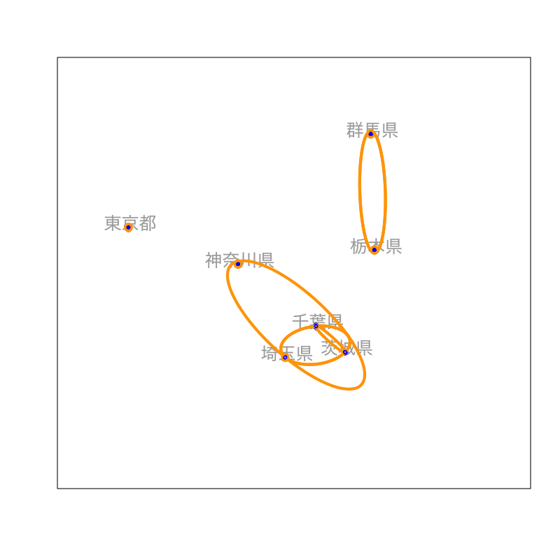
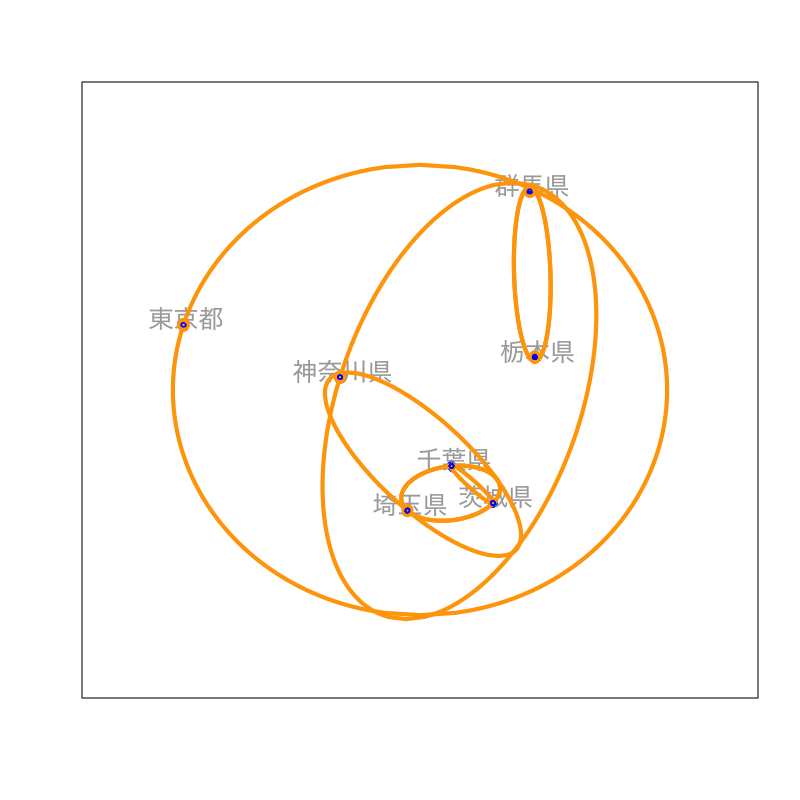

クラスタ分析
基本的な考え方と階層的方法
(Press ? for help, n and p for next and previous slide)
講義概要
- 第1回 : 基本的な考え方と階層的方法
- 第2回 : 非階層的方法と分析の評価
クラスタ分析の例
実データによる例
- 総務省統計局より取得した都道府県別の社会生活統計指標の一部
- 総務省 https://www.e-stat.go.jp/SG1/estat/List.do?bid=000001083999&cycode=0
データ https://noboru-murata.github.io/statistical-data-analysis2/data/data06.zip
Pref : 都道府県名 Forest : 森林面積割合 (%) 2014年 Agri : 就業者１人当たり農業産出額(販売農家）(万円) 2014年 Ratio : 全国総人口に占める人口割合 (%) 2015年 Land : 土地生産性（耕地面積１ヘクタール当たり）(万円) 2014年 Goods : 商業年間商品販売額［卸売業＋小売業］（事業所当たり）(百万円) 2013年 Area : 地方区分
データの概要
| Pref | Forest | Agri | Ratio | Land | Goods | Area |
|---|---|---|---|---|---|---|
分析の目的

Figure 1: 散布図

Figure 2: 主成分得点による散布図

Figure 3: 散布図上のクラスタ構造 (クラスタ分析の概念図)
クラスタ分析の考え方
クラスタ分析
クラスタ分析 (cluster analysis) の目的
個体の間に隠れている 集まり=クラスタ を個体間の“距離”にもとづいて発見する方法
- 個体間の類似度・距離(非類似度)を定義
- 同じクラスタに属する個体どうしは似通った性質
- 異なるクラスタに属する個体どうしは異なる性質
- さらなるデータ解析やデータの可視化に利用
- 教師なし学習の代表的な手法の一つ
クラスタ分析の考え方
- 階層的方法
- データ点およびクラスタの間に 距離 を定義
- 距離に基づいてグループ化
- 近いものから順にクラスタを 凝集
- 近いものが同じクラスタに残るように 分割
- 非階層的方法
- クラスタの数を事前に指定
- クラスタの 集まりの良さ を評価する損失関数を定義
- 損失関数を最小化するようにクラスタを形成
階層的方法
凝集的クラスタリング
- データ・クラスタ間の距離を定義する
- データ点とデータ点の距離
- クラスタとクラスタの距離
- データ点およびクラスタ間の距離を求める
- 最も近い2つを統合し新たなクラスタを形成する
- データ点とデータ点
- データ点とクラスタ
- クラスタとクラスタ
- クラスタ数が1つになるまで2-3の手続きを繰り返す
事例
社会生活統計指標の一部(関東地方)
都道府県名 森林面積割合 農業産出額 人口割合 土地生産性 商品販売額

Figure 4: 凝集的クラスタリング

Figure 5: クラスタリングの手続き (その1)

Figure 6: クラスタリングの手続き (その2)

Figure 7: クラスタリングの手続き (その3)

Figure 8: クラスタリングの手続き (その4)

Figure 9: クラスタリングの手続き (その5)

Figure 10: クラスタリングの手続き (その6)

Figure 11: デンドログラムによるクラスタ構造の表示
データ間の距離
データ間の距離
データ : 変数の値を成分としてもつベクトル
\begin{equation} \boldsymbol{x}=(x_{1},\dotsc,x_{d})^{\mathsf{T}}, \boldsymbol{y}=(y_{1},\dotsc,y_{d})^{\mathsf{T}}\in\mathbb{R}^{d} \end{equation}- 距離 : \(d(\boldsymbol{x},\boldsymbol{y})\)
- 代表的なデータ間の距離
- Euclid 距離 (ユークリッド ; Euclidean distance)
- Manhattan 距離 (マンハッタン ; Manhattan distance)
- Minkowski 距離 (ミンコフスキー ; Minkowski distance)
Euclid 距離
- 最も一般的な距離
各成分の差の2乗和の平方根 (2ノルム)
\begin{equation} d(\boldsymbol{x},\boldsymbol{y}) =\sqrt{(x_{1}-y_{1})^{2}+\dotsb+(x_{d}-y_{d})^{2}} \end{equation}
Manhattan 距離
- 後述する Minkowski 距離の \(p=1\) の場合
格子状に引かれた路に沿って移動するときの距離
\begin{equation} d(\boldsymbol{x},\boldsymbol{y}) =|x_{1}-y_{1}|+\dotsb+|x_{d}-y_{d}| \end{equation}
Minkowski 距離
- Euclid 距離を \(p\) 乗に一般化した距離
各成分の差の \(p\) 乗和の \(p\) 乗根(\(p\)-ノルム)
\begin{equation} d(\boldsymbol{x},\boldsymbol{y}) =\bigl\{|x_{1}-y_{1}|^{p}+\dotsb+|x_{d}-y_{d}|^{p}\bigr\}^{1/p} \end{equation}
その他の距離
- 類似度や乖離度などデータ間に自然に定義されるものを用いることは可能
- 語句の共起 (同一文書に現れる頻度・確率)
- 会社間の取引量 (売上高などで正規化が必要)
- 擬似的な距離でもアルゴリズムは動く
実習
R : クラスタ分析
- 関連するパッケージ
- stats : base R の基本的な統計に関するパッケージ
- 関数
dist(),hclust,kmeans()など - 標準でインストールされている
- 関数
- cluster : Kaufman and Rousseeuw (1990) にもとづくパッケージ
- 関数
daisy(),agnes(),pam()など - 標準でインストールされている
- 関数
- ggfortify : ggplotによる描画を補助するパッケージ
- 関数
autoplot()など - 既に導入済み(回帰，主成分，判別分析でも利用)
- 関数
ggdendro : ggplotによるデンドログラム描画のパッケージ
#' 最初に一度だけ以下のいずれかを実行しておく #' - Package タブから ggdendro をインストール #' - コンソール上で次のコマンドを実行 'install.packages("ggdendro")'
- stats : base R の基本的な統計に関するパッケージ
R : データ間の距離の計算
関数
stats::dist()dist(x, method = "euclidean", diag = FALSE, upper = FALSE, p = 2) #' x: データフレーム #' method: 距離 (標準はユークリッド距離，他は"manhattan","minkowski"など) #' diag: 対角成分を持たせるか #' upper: 上三角成分を持たせるか (標準は下三角成分のみ) #' 返値は dist class
関数
cluster::daisy()daisy(x, metric = c("euclidean", "manhattan", "gower"), stand = FALSE, type = list(), weights = rep.int(1, p), warnBin = warnType, warnAsym = warnType, warnConst = warnType, warnType = TRUE) #' x: データフレーム #' metric: 距離 (標準はユークリッド距離，他は"manhattan"など) #' stand: 正規化(平均と絶対偏差の平均による)の有無 #' 返値は dissimilarity class
練習問題
都道府県別の社会生活統計指標を用いて以下を確認しなさい
#' データの読み込み方の例 js_df <- read_csv("data/japan_social.csv") |> column_to_rownames(var = "Pref") |> # 'Pref'を行名に変換 select(-Area) # 地方名は除く
- 正規化せずにユークリッド距離とマンハッタン距離の計算を行いなさい
- 正規化して上記と同様の計算を行いなさい
- 関東の都県同士の距離を表示しなさい (daisyによる正規化を用いなさい)
- 大阪と四国の間の距離を表示しなさい
- ユークリッド距離とマンハッタン距離の散布図を描き比較しなさい
クラスタ間の距離
クラスタ間の距離
クラスタ : いくつかのデータ点からなる集合
\begin{equation} C_{a}=\left\{\boldsymbol{x}_{i}|i\in\Lambda_{a}\right\},\; C_{b}=\left\{\boldsymbol{x}_{j}|j\in\Lambda_{b}\right\},\quad C_{a}\cap C_{b}=\emptyset \end{equation}- 2つのクラスタ間の距離 : \(D(C_{a},C_{b})\)
- データ点の距離から陽に定義する方法
- クラスタの統合にもとづき再帰的に定義する方法
- 代表的なクラスタ間の距離
- 最短距離法 (単連結法 ; single linkage method)
- 最長距離法 (完全連結法 ; complete linkage method)
- 群平均法 (average linkage method)
最短距離法
最も近い対象間の距離を用いる方法
\begin{equation} D(C_{a},C_{b}) =\min_{\boldsymbol{x}\in C_{a},\;\boldsymbol{y}\in C_{b}} d(\boldsymbol{x},\boldsymbol{y}) \end{equation}統合前後のクラスタ間の関係
\begin{equation} D(C_{a}+ C_{b}, C_{c}) =\min\bigl\{D(C_{a},C_{c}), D(C_{b},C_{c})\bigr\} % =\min\left\{D(C_{a},C_{c}), D(C_{b},C_{c})\right\} \end{equation}
最長距離法
最も遠い対象間の距離を用いる方法
\begin{equation} D(C_{a},C_{b}) =\max_{\boldsymbol{x}\in C_{a},\;\boldsymbol{y}\in C_{b}} d(\boldsymbol{x},\boldsymbol{y}) \end{equation}統合前後のクラスタ間の関係
\begin{equation} D(C_{a}+ C_{b}, C_{c}) =\max\bigl\{D(C_{a},C_{c}), D(C_{b},C_{c})\bigr\} % =\max\left\{D(C_{a},C_{c}), D(C_{b},C_{c})\right\} \end{equation}
群平均法
全ての対象間の平均距離を用いる方法
\begin{equation} D(C_{a},C_{b}) =\frac{1}{|C_{a}||C_{b}|} \sum_{\boldsymbol{x}\in C_{a},\;\boldsymbol{y}\in C_{b}} d(\boldsymbol{x},\boldsymbol{y}) \end{equation}- ただし \(|C_{a}|\), \(|C_{b}|\) はクラスタ内の要素の数を表す
統合前後のクラスタ間の関係
\begin{equation} D(C_{a}+ C_{b}, C_{c}) =\frac{|C_{a}|D(C_{a},C_{c})+|C_{b}|D(C_{b},C_{c})}{|C_{a}|+|C_{b}|} \end{equation}
距離計算に関する注意
- データの性質に応じて距離は適宜使い分ける
- データ間の距離の選択
- クラスタ間の距離の選択
- 変数の正規化は必要に応じて行う
- 物理的な意味合いを積極的に利用する場合はそのまま
- 単位の取り方などによる分析の不確定性を避ける場合は平均0，分散1に正規化
- データの性質を鑑みて適切に前処理
実習
R : 階層的クラスタリング
関数
stats::hclust()hclust(d, method = "complete", members = NULL) #' d: 距離行列 #' method: 分析法 (標準は最長距離法，他は"single","average"など)
分析のための補助的な関数
#' stats::cutree() - デンドログラムに基づくクラスタの分割 cutree(tree, k = NULL, h = NULL) #' tree: stats::hclust() の返値 #' k: クラスタの数を指定して分割 #' h: クラスタの高さを指定して分割
視覚化のための関数 (ggplot 系)
ggdendrogram(data, segments = TRUE, labels = TRUE, leaf_labels = TRUE, rotate = FALSE, theme_dendro = TRUE, ...) #' data: stats::hclust(), stats::dendrogram() などの返値視覚化のための関数 (graphics 系)
#' stats::plot.hclust() - 系統樹の表示 plot(x, labels = NULL, hang = 0.1, check = TRUE, axes = TRUE, frame.plot = FALSE, ann = TRUE, main = "Cluster Dendrogram", sub = NULL, xlab = NULL, ylab = "Height", ...) #' x: stats::hclust() の返値 #' stats::rect.hclust() - クラスタの分割表示 (cutreeとほぼ同様) rect.hclust(tree, k = NULL, which = NULL, x = NULL, h = NULL, border = 2, cluster = NULL) #' tree: stats::hclust() の返値
R : 2次元でのクラスタ表示
関数
ggfortify::autoplot()(ggplot 系)autoplot(object, data = NULL, frame = FALSE, scale = 1, x = 1, y = 2, variance_percentage = TRUE, ...) #' object: stats::prcomp() などの返値 #' data: 描画に必要な追加データ #' frame: クラスタごと(colourなどで指定)に凸包または楕円を描画 #' 詳細は '?ggfortify::autoplot.pca_common()/ggbiplot()'を参照
- クラスタの分割には関数 cutree() を利用する
- 2次元の散布図の作成には主成分分析などを利用する
関数
cluster::clusplot()(graphics 系)clusplot(x, clus, diss = FALSE, stand = FALSE, lines = 2, shade = FALSE, color = FALSE, labels= 0, plotchar = TRUE, col.p = "dark green", col.txt = col.p, col.clus = 5，...) #' x: データフレーム #' clus: クラスタ分割 #' stand: 正規化の有無 #' lines: クラスタ間の繋がりの表示 (0:無，1:外，2:中心) #' shade: 網掛けの有無 #' labels: ラベルの表示 (0:無，2:データとクラスタ, 3:データ, 4:クラスタ, など) #' col.p/txt/clue: データ点・文字・クラスタの色指定 #' 詳細は '?cluster::clusplot.default()' を参照
練習問題
- 都道府県別の社会生活統計指標を用いて以下の分析を行いなさい
- 平均0，分散1に正規化したデータのユークリッド距離を用いて， 群平均法による階層的クラスタリングを行いなさい
- クラスタ数を5つとして分割を行いなさい
R : package::cluster の利用
関数
cluster::agnes()agnes(x, diss = inherits(x, "dist"), metric = "euclidean", stand = FALSE, method = "average", par.method, keep.diss = n < 100, keep.data = !diss, trace.lev = 0) #' x: データフレーム，または距離行列 #' metric: 距離 (標準はユークリッド距離，他は 'manhattan' など) #' stand: 正規化(平均と絶対偏差の平均による)の有無 #' method: 分析法 (標準は群平均法，他は 'single', 'complete' など)
視覚化のための補助的な関数 (base R系)
#' cluster::plot.agnes() - 系統樹および凝集係数の表示 plot(x, ask = FALSE, which.plots = NULL, main = NULL, sub = paste("Agglomerative Coefficient = ",round(x$ac, digits = 2)), adj = 0, nmax.lab = 35, max.strlen = 5, xax.pretty = TRUE, ...) #' x: cluster::agnes() の返値 #' which.plots: 1 - banner plot, 2 - dendrogram
データセットの準備
- Webアンケート (都道府県別好きなおむすびの具)
- 「ごはんを食べよう国民運動推進協議会」(平成30年解散)
(閉鎖) http://www.gohan.gr.jp/result/09/anketo09.html - データ https://noboru-murata.github.io/multivariate-analysis/data/omusubi.csv
- 「ごはんを食べよう国民運動推進協議会」(平成30年解散)
アンケート概要 (Q2の結果を利用)
【応募期間】 2009年1月4日～2009年2月28日 【応募方法】 インターネット、携帯ウェブ 【内 容】 Q1. おむすびを最近１週間に、何個食べましたか？ そのうち市販のおむすびは何個でしたか？ Q2. おむすびの具では何が一番好きですか？ A.梅 B.鮭 C.昆布 D.かつお E.明太子 F.たらこ Ｇ.ツナ H.その他 Q3. おむすびのことをあなたはなんと呼んでいますか？ A.おにぎり B.おむすび C.その他 Q4. おむすびといえば、どういう形ですか？ A.三角形 B.丸形 C.俵形 D.その他 【回答者数】 男性 9,702人 32.0% 女性 20,616人 68.0% 総数 30,318人 100.0%
練習問題
データ `omusubi.csv` を用いて以下の分析を行いなさい．
#' データの読み込み om_data <- read_csv(file = "data/omusubi.csv") om_df <- om_data |> column_to_rownames(var = "prefecture")
Hellinger距離を用いて距離行列を作成しなさい
\(\boldsymbol{p},\boldsymbol{q}\) を確率ベクトルとして 定義される確率分布の間の距離
\begin{equation} d_{hel}(\boldsymbol{p},\boldsymbol{q}) = \frac{1}{\sqrt{2}}d_{euc}(\sqrt{\boldsymbol{p}},\sqrt{\boldsymbol{q}}) \end{equation}- 群平均法による階層的クラスタリングを行いなさい
- クラスタ数を定めて2次元でのクラスタ表示を作成しなさい
次回の予定
- 第1回 : 基本的な考え方と階層的方法
- 第2回 : 非階層的方法と分析の評価